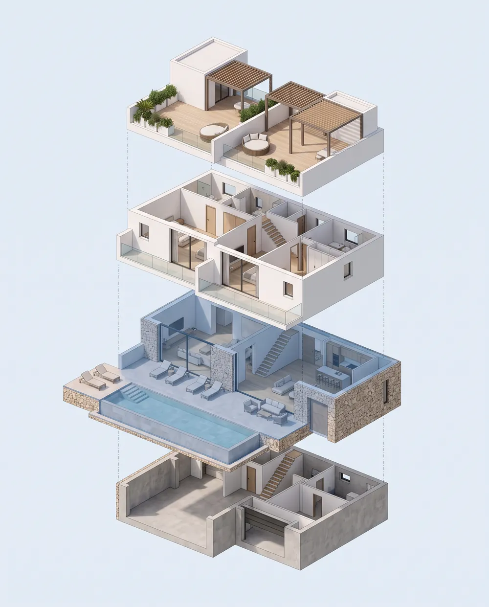

¿Sabes que el modelo 3D más famoso del mundo es una tetera?
Universidad de Utah
1975
Martin Newell
Sandra Newell
curvas
asa con agujero
sombras sobre sí misma
✓ sin color ni textura
Toy Story
cine · 1995
Los Simpson
tele · 1995
la real, un 33 % más alta
✓ y gustó más así

Casa de ejemplo · modelo 3D desde su plano

homeview3d.com
¿Por qué…?